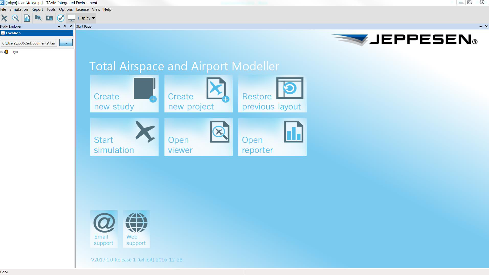
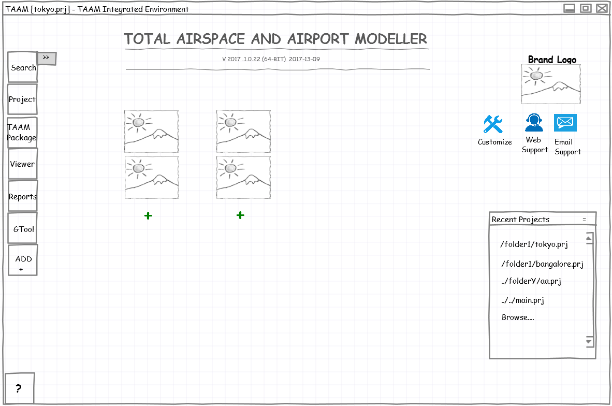
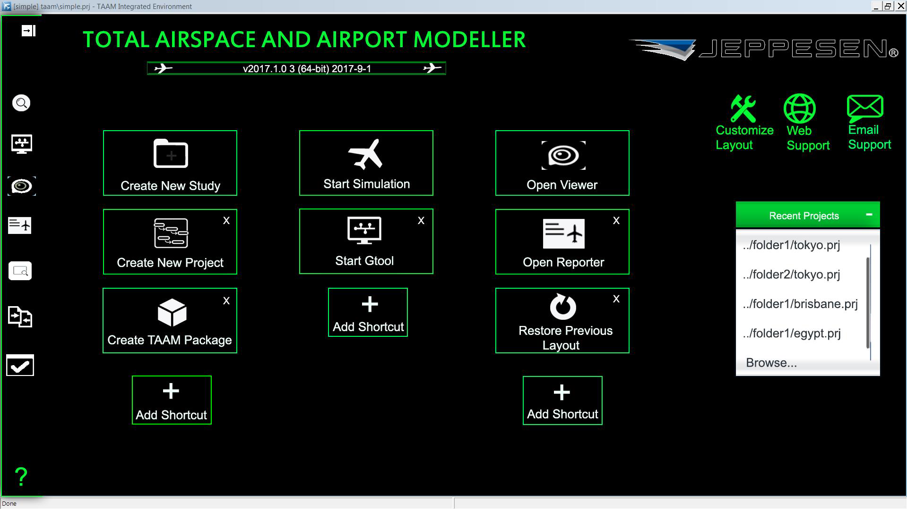
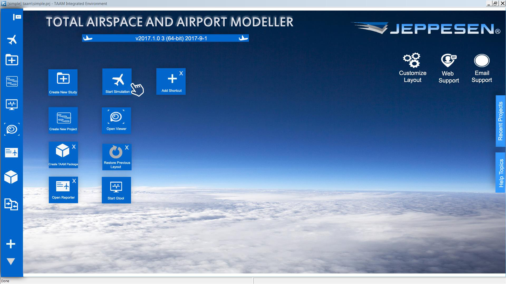
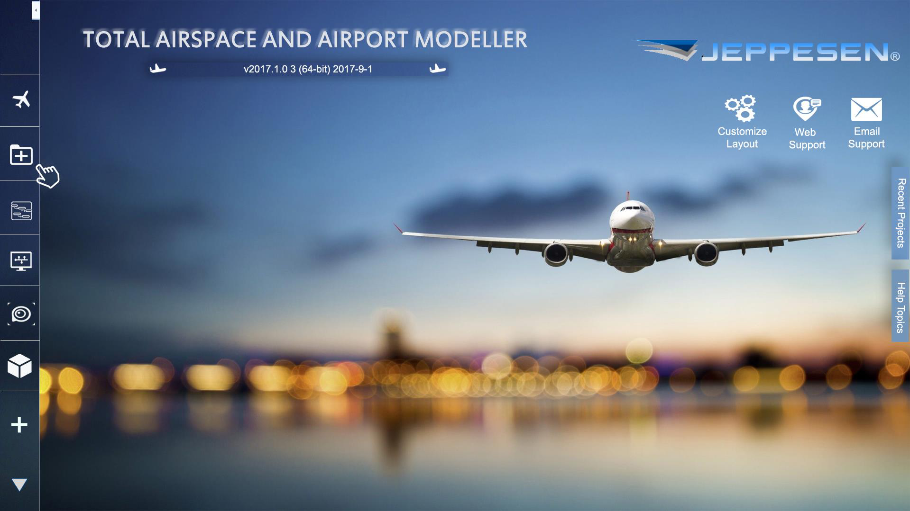
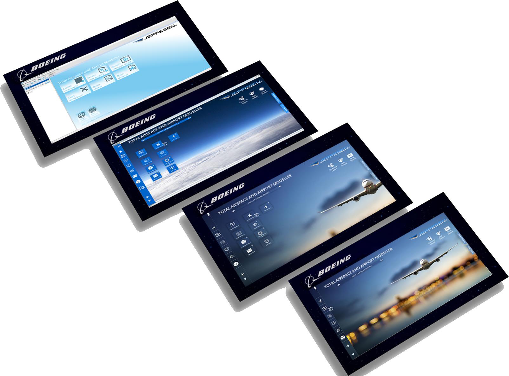

20
YEARS NO REFRESH
first UX-led revamp since the product’s late-90s shell
TAAM is the engine airline planners use to simulate years of runway, taxiway, and airspace operations in days. By 2016 the shell wrapping that engine hadn’t been touched in two decades — the planners loved the math and tolerated the chrome. This case is the story of the revamp: how I moved a Windows-98-era landing page into something Boeing-branded, customisable, and demonstrably faster to learn — without breaking the muscle memory of the planners who already lived in it.
TAAM — Total Airspace and Airport Modeller — is Boeing’s gold-standard fast-time simulation platform for airline ops planners, civil aviation authorities, and aerodrome consultants. It models years of runway, gate, taxiway and airspace operations in days. The simulation engine is world-class. The shell around it had not been refreshed in two decades and felt, in the words of one planner, “like a Windows-98 dialog box pretending to be a flight deck.”
I led the end-to-end UX revamp of the TAAM landing page and core navigation as the sole UX designer on the Boeing India team. The work spanned research, stakeholder alignment, a day-long Design Thinking workshop, lo-fi and hi-fi prototypes, and restricted usability testing with the TAAM User Group (TUG). The brief was small — “revamp the landing page” — but the real job was reframing what the landing page was for: not a launchpad, but a first impression that had to carry Boeing’s brand into a product the world had stopped expecting brand from.
TAAM is used by hub-scale airports, ANSPs, and consultancies to answer questions with eight-figure capex implications: will a new runway at HND clear the 2030 schedule? · what does the GRU expansion do to ground-stop propagation? · can SFO sequence a fourth daily A380 wave without taxi conflicts? A planner’s working session is often 6–10 hours long. The landing page is the first surface they see every morning.
In 2016 that surface looked like this:

Five things were true about it at once. It was functionally complete — the planners knew where every button was. It was visually inert — a light-blue glass treatment that read as Windows 7 control panel, not aviation tool. It carried Jeppesen branding (TAAM’s pre-acquisition lineage), not Boeing’s. It was not customisable — every operator saw the same six tiles in the same order, regardless of how they actually started their day. And it was the only screen prospects saw in product demos, which meant the sales team was opening every conversation with a 90s control panel.
Before drawing a single pixel I ran a virtual whiteboard with the Product Manager, Business Analyst, and two engineers from the dev team. The opening question was deliberately blunt: what’s wrong with the landing page, in your words? The answers split cleanly along three axes, and they were not the same problem.
I categorised every stated issue as either a Business Problem (BP) — about brand, sales, market positioning — or a User Problem (UP) — about flexibility, learnability, daily friction. This separation was important: BP and UP problems get fixed by very different moves, and conflating them is how landing-page redesigns turn into year-long thrashes.
I then ran a 5-WHYs drill against each cluster. The five sentences below were what the PM and BA could both sign their name to at the end of the session — the brief in their own words.
The biggest risk on a 20-year-old product is not bad design — it’s bad alignment. Planners had been promised a refresh three times before and each one died in committee. I committed up front to a closed-loop process where every step ended with a written sign-off from the PM and BA, and where stakeholders saw the work as it evolved rather than as a finished reveal.
I didn’t have direct access to customers — TAAM’s install base is small, sensitive, and gated by sales relationships. The BA had already prepared four personas from her years on the customer-feedback log. I pressure-tested them against product SMEs, forum threads, and the few internal planners who’d previously worked at airline operators. Below is the working set I used to build scenarios.
The personas’ mental models were synthesised from Think-Aloud sessions with two internal SMEs. The common journey across all four was strikingly linear, and the landing page sat at both ends of it — entry and re-entry. That was the first design insight: the landing page is not a launcher; it’s a resumption surface.
A redesign that goes straight from research to mockups is a redesign that ships the designer’s taste. I ran a day-long Design Thinking workshop with PM, BA, and the dev lead instead. The goal was not to find the answer — it was to make the stakeholders themselves draw eight wild possibilities and discover which directions they could and could not defend.
The PM’s three super-votes locked the directional brief. They were also mutually compatible — which is rarer than it sounds. Memory-recall said keep the six-tile grid. Plug-and-play said let the planner reorder it. Cross-platform said design at touch density from day one. That triplet became the design constraints I carried into prototyping.
I built the visual system before any screen. Two colours (Boeing blue + neutral slate), one typeface (a clean grotesque to replace the legacy Verdana), 8-pt grid, 48-pt touch targets. Then I went from paper to whiteboard to wireframe to hi-fi in two-week rounds, walking the BA and PM through every iteration before deciding.
The wireframe locked the page anatomy: a left rail of six verbs, a content well for personal shortcuts (the “plug-and-play” promise), a Recent Projects panel, and a brand mark instead of a Jeppesen wordmark. It also pinned an explicit slot for brand identity — non-negotiable for the PM, but I wanted it pre-allocated so it never became a fight at the visual stage.

I designed four hi-fi alternatives across the brief’s three constraints, each pushing on a different lever — pure brand fidelity, atmospheric depth, customisable density, and tablet-first. All four shared the same nav, IA, and grid; the aesthetic was the variable. The TUG sat through a 90-minute review and voted with sticky-dots — the dawn and dusk variants tied for first.




The shipped landing page kept Direction A’s nav and chrome (the planners’ muscle memory) and adopted Direction C’s atmospheric background as a per-user preference. The customisable tile region — the heart of the “plug-and-play” brief — replaced the six fixed buttons with an “Add Shortcut” affordance: any tool, any study, any saved layout could become a tile, drag-reorderable, and the panel remembered its order per user.
The Recent Projects rail (right side) became the resumption surface I’d identified in the journey work — Mei-Lin’s top action and Olu’s top action both became one click from the landing page.
We defined three success metrics with the TUG before any visual decision was made: feature discoverability, learning curve for the revamped design, and user delight. The restricted usability programme — two rounds of moderated Think-Aloud + first-click + SUS, seven planners total — produced the deltas below.
Qualitatively, two things shifted that didn’t show in the numbers. First, the sales team stopped opening prospect demos with an apology — the landing page now led the demo instead of being skipped past. Second, the dev team adopted the visual system on the Reporter and Viewer modules without being asked, because the component library had survived the rendering layer’s constraints. That was the moment the work stopped being a landing-page revamp and became a product-wide refresh, which was always the real prize.
What I’d keep. The BP/UP split. The PM-super-vote ritual in Crazy-8s. The pre-allocated brand slot in the wireframe. The memory-recall-plus-customisation triplet. The decision to invest in a component system before the first screen — that’s what bought the downstream Reporter and Viewer adoption for free.
What I’d do differently. I’d run a quantitative benchmark of the old page before redesigning. We had the SUS at the end; we did not have a clean SUS at the start. The 71-baseline number above is from session two, retrospectively. A clean pre-baseline would have made the case for the next refresh (and the next budget) materially easier.
Lessons that have stuck. Three of them. One: aviation users tolerate ugly far more than they tolerate inconsistency — match the chrome to the engine, not to the trend. Two: when stakeholders disagree, force them to draw, not talk — Crazy-8 reveals what was hiding in the language. Three: on a 20-year-old product, the brief is never “redesign the landing page” — it is “earn the right to redesign everything else, using the landing page as proof.”
The pan-Dell personalization initiative I’ve been leading since 2022 — prompt libraries, intent estimation, multi-modal adaptive layouts.